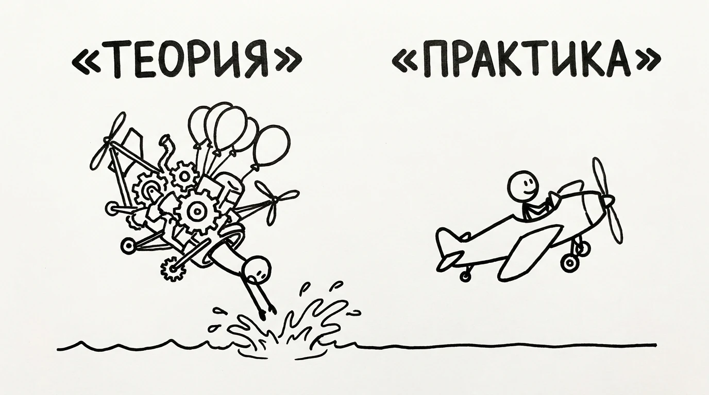

Лэнгли считал. Формулы, теория, красиво на бумаге. Проверял всё двумя гигантскими публичными запусками. Оба — в воду.
Братья Райт делали наоборот. Построили самодельную аэродинамическую трубу и продули в ней 200 форм крыла. Не спорили, какое лучше, — спрашивали у ветра. Каждый день. По чуть-чуть.

Слева — идеальная машина из формул. Справа — то, что реально летит.
Вот разница. Лэнгли жил в теории и сверялся с реальностью раз в полгода, ва-банк. Райты касались её каждый день и правили курс по мелочи.
Это и есть контакт с реальностью: короткая петля «сделал → увидел, что вышло на самом деле → поправил». Чем короче петля — тем быстрее ты становишься точным.
Длина петли важнее качества идеи. Средняя идея с петлёй в один день обгонит гениальную идею с петлёй в полгода. Просто потому, что первая успеет стать хорошей, пока вторая ещё пишется набело.
И да, ты сейчас узнал в Лэнгли кого-то. Может, себя.
Потому что у контакта с реальностью есть враг, и это не лень. Это приятная версия происходящего — та, где всё объяснимо, виноваты все кроме тебя, и данных не требуется. Мозг генерирует её бесплатно и очень быстро.
Давай проверим, отличаешь ли ты одно от другого. Пять фраз. В каждой — либо факт, либо выдача желаемого за действительное.